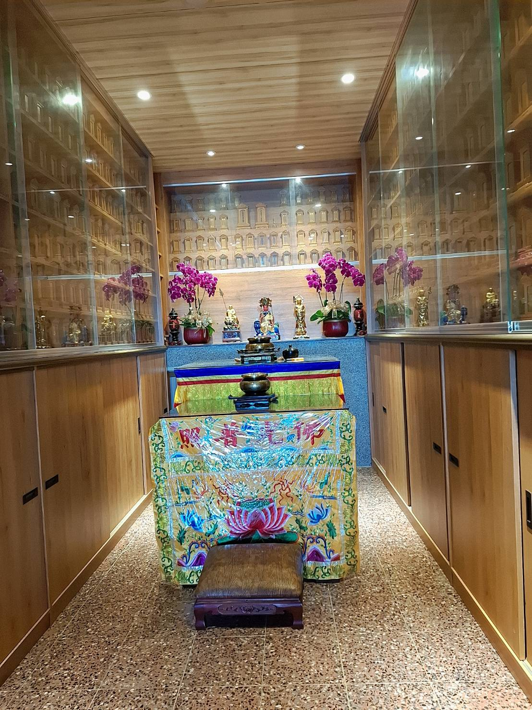
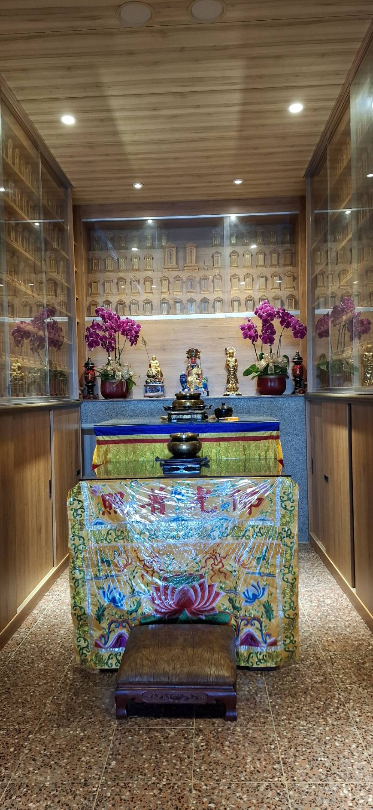
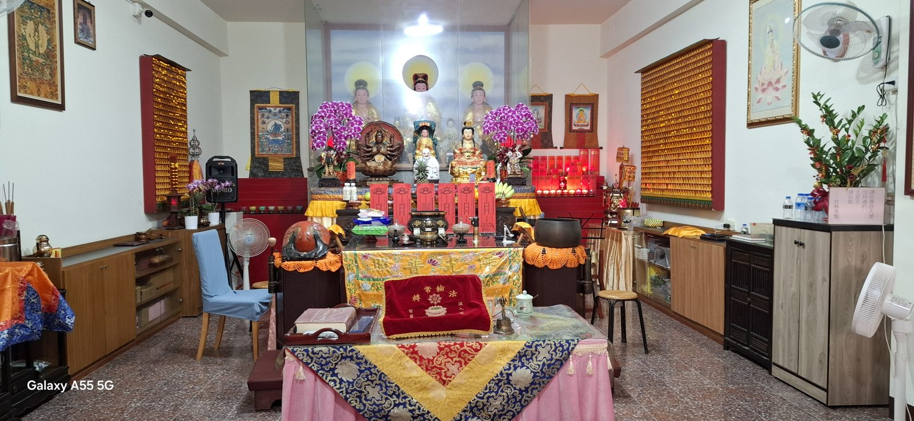
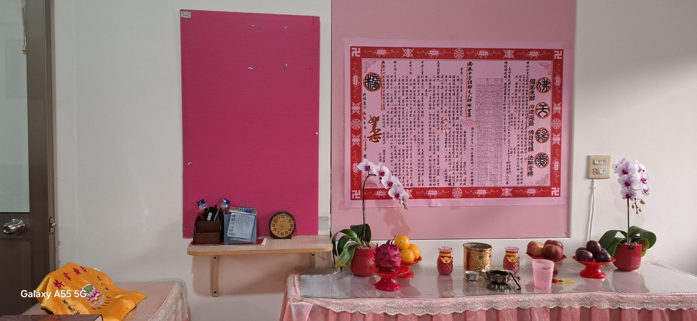
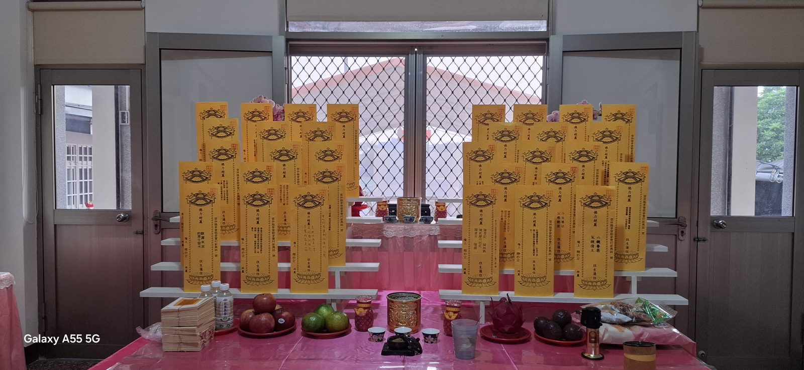
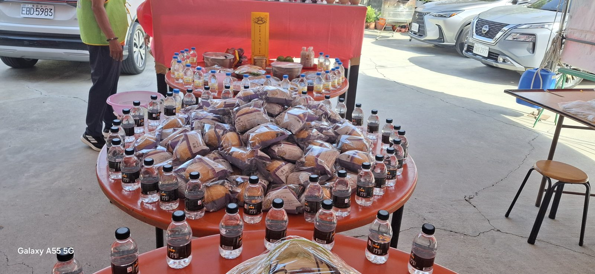
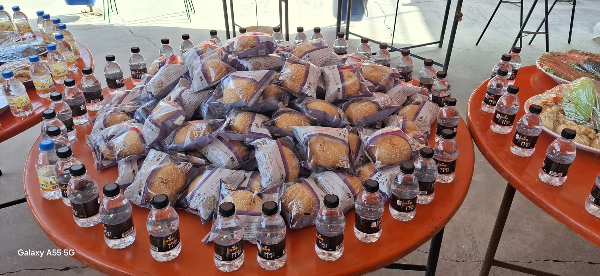
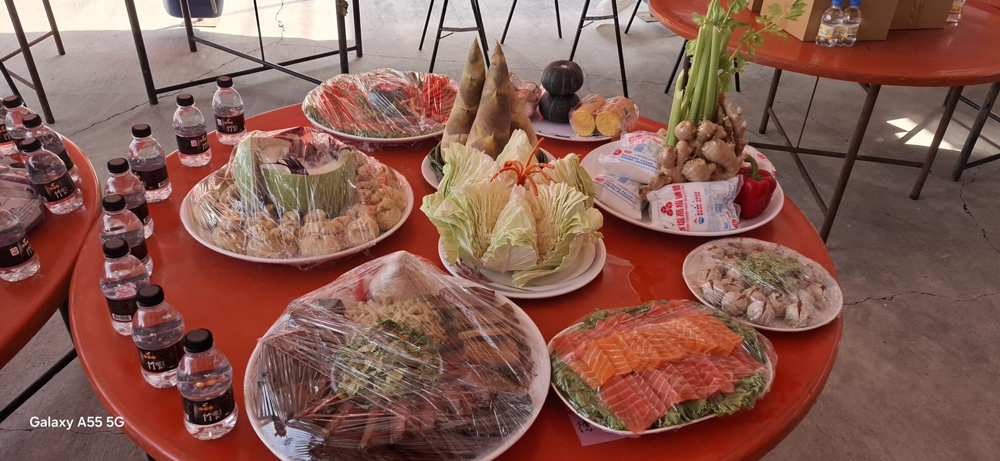

功德堂簡介
麥寮竹林寺功德堂與本寺同址，供奉南海佛祖，由妙定師父住持照看。我們誠心歡迎十方大德為祖先、親人安奉牌位，讓先人在佛光中得到庇佑與迴向，也讓家人有個隨時可以回來追思的地方。
功德堂一景


法會剪影
竹林寺定期舉辦法會，誦經禮佛、設立牌位，為先人與十方眾生迴向祈福。



普度
中元普度，竹林寺備辦麵包、飲水與各式供品，誠心普施十方，願一切眾生離苦得樂。



牌位安奉費用
祖先牌位永久安奉
新台幣 88,888 元
一個牌位就能把全家族的先人一起寫上，例如「陳姓歷代祖先」、男阿祖和女阿祖、阿公阿嬤，以及父母，讓一家先人同堂共享香火。
個人牌位永久安奉
新台幣 38,888 元
單人一個，安奉一位親人。
聯絡與預約
如需安奉牌位或想先來寺裡看看，歡迎與我們聯絡，師父會細心為您說明。
寺院：麥寮竹林寺
地址：雲林縣麥寮鄉麥豐村新興路1號
電話：05-6936453
聯絡人：妙定師父